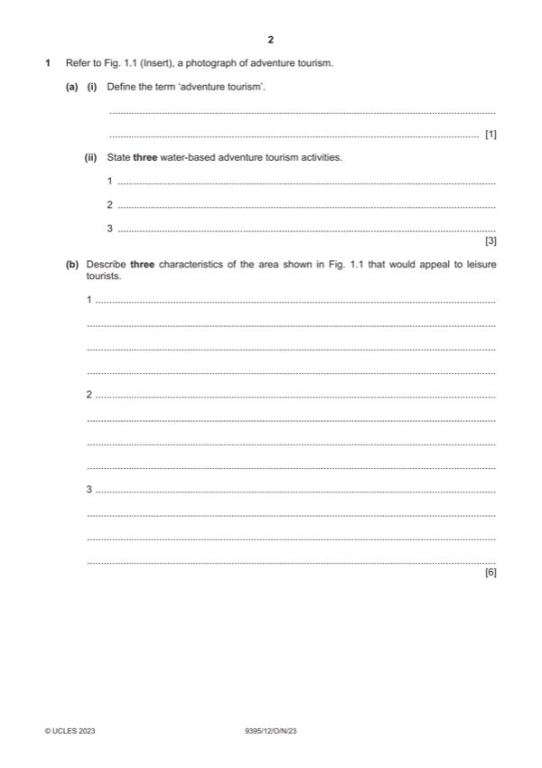

Question 1

Original paper page 2
Part 1 — solution
Refer to Fig.1.1(Insert) photographs of adventure tourism.
Mark points
- Include the ideas shown in the solution above.
Part 1(a)(i) — solution
Define the term ‘adventure tourism’. 1
Award one mark for a correct definition.
Adventure tourism is a type of tourism in which tourists undertake
adventurous activities like as skydiving, hill climbing, scuba diving.
Tourists want to experience an adrenaline rush given by undertaking
activities.
Mark points
- Include the ideas shown in the solution above.
Part 1(a)(ii) — solution
State three possible water-based tourism activities. 3
Award one mark per suggestion.
Climbing cliffs
Yachting/sailing
Canoeing
Swimming/diving
Fishing
Credit any correct response.
Mark points
- Include the ideas shown in the solution above.
Part 1(b) — solution
Describe three characteristics the area shown in Fig.1.1 appeals to 6
leisure tourists.
Award one mark per activity described and the second for the explanation
Hiking in mountainous areas (1) could be adapted to have guided walks for
groups of bird watchers/wildlife enthusiasts or older people. (1)
Hiking, (1) this can be adapted to have a range of options such as easy,
medium, difficult, family friendly, to include a range of customer groups(1)
Lake cruises (1) may be adapted so that the people who travel on them can
take part in certain adventure tourism activities. (1)
Canoes (1) can be used with more than one person inside and the activity
adapted for group instruction (1).
Cliff climbing (1) could be done with an experienced guide so that the more
adventurous are carefully supervised/advised about the activity they are
undertaking.(1)
Water activities such as swimming (1) in the lake. (1)
Picnics/meals etc. on the lake shores (1) could appeal to families/groups as
there is also space for children to play. (1)
Village/built up area near the lake (1) where tourists could shop for souvenirs
or get refreshments after some activity. (1)
Wildlife spotting (1) in the areas close to the lake/fishing (1) in the lake would
also be likely in the area.
Credit any other correct response.
2023 Page 6 of 19
9395/12 Cambridge International AS & A Level – Mark Scheme October/November
PUBLISHED 2023
Mark points
- Include the ideas shown in the solution above.
Part 1(c) — solution
Explain two social factors which have encouraged the development of 6
adventure tourism.
Award one mark for the social factor and up to two further marks for the
explanation.
Change in family structures (1) people having children when they are older (1)
allows more time for adventure tourism activities whilst they are younger and
have fewer responsibilities. (1)
Increased awareness of healthy lifestyles (1) people are more likely to want to
do active, sporting activities (1) which encourages the growth of adventure
tourism locations (1).
Paid holidays/longer holidays (1) means that people have time/money
available to travel to destinations (1) where they can undertake a greater
variety of activities. (1)
Accept any other reasonable answer.
Social factors include: age, family structures, leisure time, rising middle
classes, increased awareness of health.
2023 Page 7 of 19
9395/12 Cambridge International AS & A Level – Mark Scheme October/November
PUBLISHED 2023
Mark points
- Include the ideas shown in the solution above.
Part 1(d) — solution
Discuss how adventure tourism may be managed responsibly. 9
This is a levels of response question and should be marked according to the
criteria below.
Content could include reference to any of the following:
Companies have links with the local population and work with them to develop
awareness of the positive aspects of tourism.
Tourists can be given guidance by the company organising their holiday so
they are aware of how to behave etc.
Local people should be utilised wherever possible – local accommodation
suppliers used.
Tourists should be encouraged to support local employers and businesses
such as restaurants/shops etc.
Wherever possible there should be negative impacts being addressed such
as repairs/support given to the local environment.
Careful environmental management with such things as access to
rivers/coasts – any areas used for adventure tourism/whether access needs
to be regulated via a rota or one way system.
Other relevant information should also be credited.
If responses are referring to the effective management of activities and there
is little reference to responsible tourism strategies, then maximum of level 2
marks.
Mark according to the levels of response criteria below.
Level 3 (7–9 marks)
Candidates will show a clear understanding of the question and include
detailed identification and discussion of the ways that adventure tourism may
be managed sustainably. Candidates effectively discuss a range of ways and
clearly attempt to weigh up the significance of each. Analytical language will
be used. There is sound and frequent evidence of thorough, detailed and
accurate knowledge and understanding of concepts and principles using
appropriate terminology.
Level 2 (4–6 marks)
Candidates will show an understanding of the question and include some
explanation of the ways that adventure tourism may be managed sustainably.
There may be some attempt to discuss and some analytical language may be
used. The answer is relevant and accurate and shows reasonable knowledge
and understanding of concepts and principles with some use of appropriate
terminology.
2023 Page 8 of 19
9395/12 Cambridge International AS & A Level – Mark Scheme October/November
PUBLISHED 2023
Mark points
- Include the ideas shown in the solution above.
Part 1(d) — solution
Level 1 (1–3 marks)
Candidates identify/describe some of the ways that adventure tourism may be
managed sustainably. Information may be a list of points but explanations are
incomplete and arguments partial (if present). The explanations lack coherent
organisation and there is no attempt to discuss. The answer is basic and
shows limited knowledge and understanding of concepts and principles with
limited use of appropriate terminology.
Level 0 (0 marks)
No content worthy of reward
Mark points
- Include the ideas shown in the solution above.